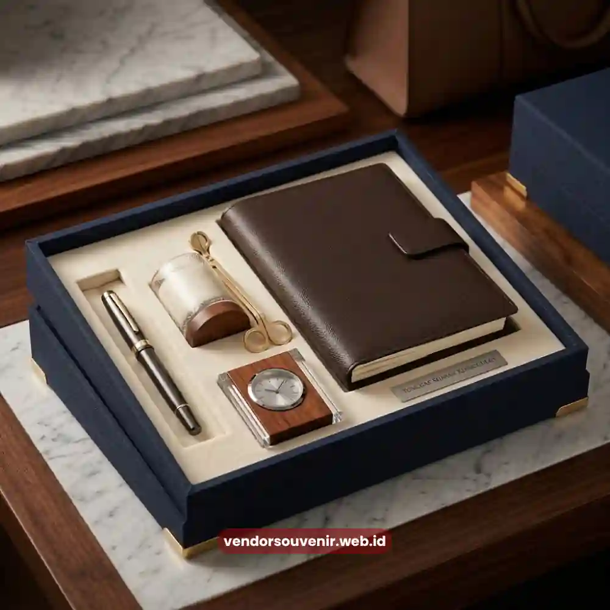

Daftar Isi
Hadiah ulang tahun perusahaan adalah bentuk apresiasi resmi yang diberikan perusahaan kepada karyawan, klien, atau mitra bisnis untuk merayakan hari jadi perusahaan.
Pemilihan hadiah yang tepat, mewah, dan berkesan mampu memperkuat citra brand sekaligus mempererat hubungan bisnis jangka panjang.
Vendor Souvenir menghadirkan koleksi hadiah korporat eksklusif yang dirancang khusus untuk momen istimewa ini.
- Hadiah ulang tahun perusahaan mencerminkan identitas dan nilai brand.
- Pemilihan produk premium meningkatkan kesan profesional di mata penerima.
- Personalisasi logo dan desain menjadi faktor pembeda utama.
- Budget dapat disesuaikan tanpa mengorbankan kesan mewah.
- Vendor Souvenir menyediakan layanan custom end-to-end untuk kebutuhan korporat.
Mengapa Hadiah Ulang Tahun Perusahaan Penting bagi Citra Brand?
Hadiah ulang tahun perusahaan bukan sekadar formalitas seremonial, melainkan investasi komunikasi brand yang berdampak langsung pada persepsi publik.
Setiap kali sebuah perusahaan merayakan hari jadinya dengan memberikan hadiah bermakna, momen tersebut menjadi kesempatan untuk menegaskan kembali nilai, visi, dan kualitas layanan di mata karyawan maupun relasi bisnis.
Riset internal industri MICE dan corporate gifting di Indonesia menunjukkan bahwa perusahaan yang secara konsisten memberikan souvenir bermerek pada momen penting cenderung memiliki tingkat loyalitas karyawan dan retensi klien yang lebih tinggi dibandingkan yang tidak.
Hal ini terjadi karena hadiah fisik menciptakan pengalaman emosional yang lebih membekas dibandingkan komunikasi verbal semata.
Selain itu, hadiah dengan kualitas premium turut membentuk persepsi bahwa perusahaan berada dalam kondisi finansial yang sehat dan memiliki perhatian terhadap detail. Kesan ini penting terutama bagi perusahaan yang bergerak di sektor B2B, di mana kepercayaan menjadi mata uang utama dalam menjaga hubungan jangka panjang dengan klien maupun investor.
Apa Saja Kategori Hadiah Ulang Tahun Perusahaan yang Populer?
Kategori hadiah ulang tahun perusahaan pada dasarnya terbagi menjadi tiga kelompok besar, yaitu hadiah fungsional harian, hadiah premium eksklusif, dan hadiah bertema seremonial. Ketiganya dapat disesuaikan dengan target penerima serta anggaran yang tersedia.
Hadiah fungsional harian mencakup produk yang digunakan dalam aktivitas kerja sehari-hari, seperti tumbler custom logo, tas laptop, atau alat tulis premium.
Kategori ini cocok diberikan kepada seluruh karyawan karena nilai kepraktisannya tinggi dan biaya produksinya dapat diatur secara efisien untuk jumlah besar.
Hadiah premium eksklusif ditujukan untuk penerima dengan level tertentu, misalnya jajaran manajemen, klien VIP, atau mitra strategis.

Pilihan Souvenir Korporat Eksklusif Anniversary
Produk pada kategori ini biasanya berbahan dasar kulit asli, logam berlapis, kayu solid, atau kombinasi material mewah lainnya yang memberikan kesan status dan penghargaan khusus.
Hadiah bertema seremonial dirancang khusus untuk momen anniversary itu sendiri, seperti plakat penghargaan, hampers eksklusif berisi produk lokal premium, atau paket suvenir dengan kemasan bertema ulang tahun perusahaan. Kategori ini sering dijadikan hadiah utama dalam acara puncak perayaan.
Bagaimana Memilih Hadiah yang Sesuai dengan Nilai Brand Perusahaan?
Hadiah yang sesuai dengan nilai brand dipilih berdasarkan kesesuaian warna, filosofi desain, dan pesan yang ingin disampaikan perusahaan kepada penerima.
Proses ini dimulai dengan memahami citra brand yang ingin ditonjolkan, apakah kesan modern-minimalis, elegan-klasik, atau dinamis-kreatif.
Setelah citra brand teridentifikasi, tahap berikutnya adalah menyesuaikan material dan finishing produk.
Perusahaan dengan citra premium umumnya memilih material kulit asli, kayu solid, atau logam dengan finishing matte, sementara perusahaan dengan citra modern lebih sering memilih material akrilik, kaca, atau kombinasi warna-warna berani.
Elemen logo dan tagline juga perlu ditempatkan secara proporsional agar tidak terkesan berlebihan.
Penempatan logo yang terlalu dominan justru dapat mengurangi kesan elegan pada produk premium, sehingga diperlukan keseimbangan antara branding dan estetika desain.
Faktor Apa yang Menentukan Kesan Mewah pada Hadiah Korporat?
Kesan mewah pada hadiah korporat ditentukan oleh kombinasi material berkualitas tinggi, kerapian finishing, kemasan presentatif, dan tingkat personalisasi produk.
Keempat faktor ini bekerja secara bersamaan untuk menciptakan pengalaman unboxing yang berkesan bagi penerima.
Material menjadi faktor paling mendasar karena secara langsung memengaruhi tekstur, ketahanan, dan nilai jual produk di mata penerima.
Material seperti kulit asli, stainless steel, kayu jati, atau kaca kristal umumnya diasosiasikan dengan kualitas premium dibandingkan material plastik standar.
Kemasan turut memegang peran penting yang sering kali terlewatkan.
Kemasan berbahan kayu, kotak magnetik, atau box custom dengan branding perusahaan mampu meningkatkan persepsi nilai produk secara signifikan, bahkan untuk item dengan biaya produksi menengah sekalipun.
Personalisasi menjadi elemen penutup yang membedakan hadiah korporat generik dengan hadiah yang benar-benar dirancang khusus.
Ukiran nama penerima, tanggal berdirinya perusahaan, atau pesan singkat dari manajemen menjadikan hadiah terasa personal meskipun diproduksi dalam jumlah besar.
Bagaimana Menentukan Anggaran Ideal untuk Hadiah Ulang Tahun Perusahaan?
Anggaran ideal untuk hadiah ulang tahun perusahaan sebaiknya ditentukan berdasarkan segmentasi penerima, bukan disamaratakan untuk seluruh pihak.
Pendekatan ini memungkinkan alokasi dana lebih efisien tanpa mengurangi kesan penghargaan pada setiap level penerima.
Segmentasi umum yang digunakan perusahaan meliputi karyawan reguler, karyawan senior atau manajerial, klien dan mitra bisnis, serta tamu undangan acara puncak.
Setiap segmen dapat menerima kategori hadiah yang berbeda sesuai dengan tingkat kedekatan hubungan dan kontribusi terhadap perusahaan.
Untuk efisiensi anggaran tanpa mengorbankan kualitas, banyak perusahaan memilih strategi tiering, yaitu memberikan hadiah fungsional dengan kualitas baik untuk kelompok besar karyawan, sementara hadiah premium eksklusif difokuskan pada kelompok kecil penerima strategis seperti direksi, klien utama, atau investor.
Kesalahan Umum yang Perlu Dihindari saat Memilih Hadiah Korporat
Kesalahan paling umum dalam pemilihan hadiah ulang tahun perusahaan adalah memilih produk generik tanpa personalisasi, sehingga hadiah terkesan seragam dengan pemberian perusahaan lain.
Hadiah tanpa identitas brand yang jelas berisiko cepat terlupakan oleh penerima.
Kesalahan berikutnya adalah mengabaikan kualitas kemasan.
Produk dengan kualitas baik namun dikemas seadanya akan kehilangan kesan mewah yang seharusnya melekat pada momen seremonial seperti anniversary perusahaan.
Kesalahan lain yang sering terjadi adalah kurangnya perencanaan waktu produksi.
Proses custom, personalisasi, dan pengiriman dalam jumlah besar membutuhkan waktu produksi yang tidak sebentar, sehingga pemesanan yang mendekati tanggal acara berisiko menyebabkan keterlambatan.
Pesan Hadiah Ulang Tahun Perusahaan Bersama Vendor Souvenir
Vendor Souvenir hadir sebagai mitra terpercaya untuk kebutuhan hadiah ulang tahun perusahaan Anda, mulai dari produk fungsional harian hingga hadiah premium eksklusif dengan personalisasi logo dan desain sesuai identitas brand.
Setiap produk diproduksi dengan standar kualitas korporat dan kemasan presentatif yang siap mengangkat kesan mewah pada momen spesial perusahaan Anda.
Tim Vendor Souvenir siap membantu proses konsultasi desain, pemilihan material, hingga produksi dalam jumlah besar dengan jadwal pengerjaan yang terukur.
Hadiah ulang tahun perusahaan yang tepat mampu memperkuat hubungan dengan karyawan, klien, dan mitra bisnis sekaligus meningkatkan citra brand di mata publik.
Kunci utamanya terletak pada pemilihan material berkualitas, personalisasi yang relevan dengan identitas perusahaan, serta kemasan yang presentatif.

Pilihan Souvenir Perusahaan dari Vendor Terpercaya
Siap Memesan Hadiah Ulang Tahun Perusahaan Anda?
Kami siap membantu menyiapkan hadiah ulang tahun perusahaan eksklusif sesuai kebutuhan dan anggaran Anda.
Konsultasikan desain custom logo dan jadwal pengiriman Anda sekarang juga.
Dapatkan penawaran harga terbaik!
Maroon Souvenir
Partner Corporate Gift terpercaya di Indonesia. Berpengalaman melayani ratusan perusahaan sejak 2018.
Lihat Portofolio Kami